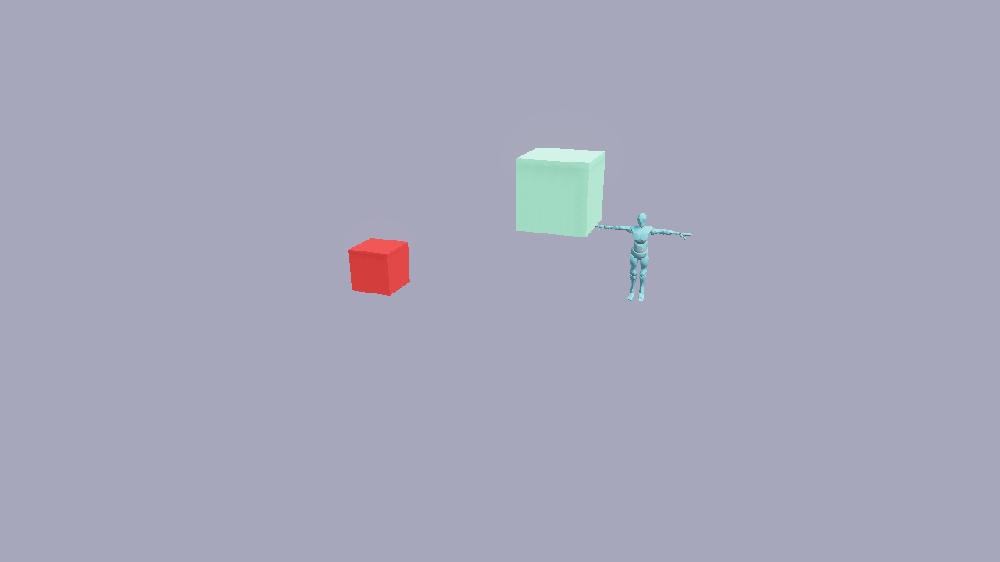
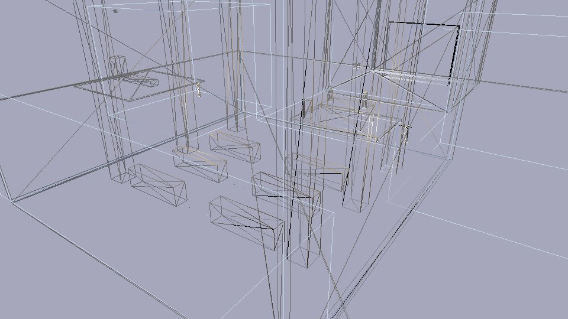
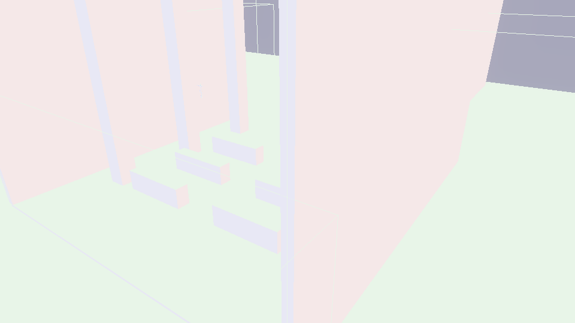

Rendering
Flint uses wgpu 23 for cross-platform GPU rendering, providing physically-based rendering (PBR) with a Cook-Torrance BRDF, cascaded shadow mapping, optional 4x MSAA, and full glTF mesh support.
PBR Shading
The renderer implements a metallic-roughness PBR workflow based on the Cook-Torrance specular BRDF:
- Base color — the surface albedo, optionally sampled from a texture
- Roughness — controls specular highlight spread (0.0 = mirror, 1.0 = diffuse)
- Metallic — interpolates between dielectric and metallic response
- Emissive — self-illumination for light sources and glowing objects
Materials are defined in scene TOML via the material component, matching the fields in schemas/components/material.toml.
Diffuse shading is Lambert by default, but the scene can blend toward Oren-Nayar, soften the terminator with diffuse wrap, and add a Charlie-sheen rim through the [environment] block. Those levers, the light component, and area lights are documented on the Lighting page.
Shadow Mapping
Directional lights cast shadows via cascaded shadow maps. Multiple shadow cascades cover different distance ranges from the camera, giving high-resolution shadows close up and broader coverage at distance. A directional light with a non-zero angular_size gets contact-hardening PCSS shadows instead of the fixed PCF kernel.
Shadows are toggled at runtime from the Rendering & Effects menu (F4), which also offers the shadow-map resolution (512 to 4096). Headlessly, use --no-shadows and --shadow-resolution. One entity stops casting with material.cast_shadows = false. See Lighting for details.
Camera Modes
The renderer supports two camera modes that share the same view/projection math:
| Mode | Usage | Controls |
|---|---|---|
| Orbit | Scene viewer (flint edit) | Left-drag to orbit, right-drag to pan, scroll or Q/E to zoom, WASD to orbit by key |
| First-person | Player (flint play) | WASD to move, mouse to look, Space to jump, Shift to sprint |
The camera mode is determined by the entry point: edit uses orbit, play uses first-person. Both produce the same view and projection matrices. A scene’s [camera] block seeds the orbit camera in the viewer and the framing in flint render; in the viewer, Space returns to that authored framing.
World lines
SceneRenderer::set_world_lines(Vec<WorldLine>, pixels_per_point) gives the renderer segments to draw in every following frame, until they’re replaced. Each flint_core::world_line::WorldLine has two world points, a display-space RGBA colour and a width in logical points. The player sets them each frame from the scripts’ draw_world_line calls.
They’re drawn after the composite and FXAA, straight onto the final target, before the HUD. Each segment is projected with the frame’s own camera and cut at the near plane. It’s expanded on the CPU into a screen-space quad of the requested width, with a one-pixel feather that the fragment shader fades. That’s the anti-aliasing, since the pass comes after MSAA and FXAA. The pass tests against the frame’s resolved single-sample depth (LessEqual) and doesn’t write depth. Each end is pulled toward the eye by 0.2% of its distance (world_line_pipeline::DEPTH_SLACK), so a line lying on a surface doesn’t fight it for depth. The colours are display-space, like the HUD’s, and they’re linearised when the target is sRGB, so a ring keeps the colour it had as a HUD line. The pipeline is built on the first frame that has lines, and its vertex buffer grows to fit the busiest frame. A renderer without the HDR chain and with MSAA has no resolved depth, so it skips the pass.
World text
World text (draw_world_text, ADR 0104) is the player’s, not the renderer’s, because it’s egui’s text. Inside the HUD’s egui pass the player lays each label out with egui’s fonts, so the glyphs it needs go up with that pass’s font atlas. After the pass it tessellates each label on its own and moves the vertices into clip space. A billboard keeps its screen layout at its anchor’s depth, with the anchor snapped to a whole pixel. Text on a plane is laid in the plane and projected corner by corner, with its true w, so its glyphs are sampled in perspective. The labels are drawn onto the HUD’s target before the HUD, in one pass against the context’s depth view (LessEqual, no depth write), with egui’s blend and colour maths and its font atlas’s bind group. Its pipeline’s texture layout has the same entries as egui-wgpu’s, and wgpu pools layouts by their entries, so egui’s bind groups fit it. SceneRenderer::frame_depth_ready() says whether the depth view holds the frame’s depth once render returns. It doesn’t with MSAA and no HDR chain, and then world text isn’t drawn.
Picking the ground
Camera::screen_to_ground(x, y, width, height, plane_y) returns the [x, z] point on the plane y = plane_y under a screen point, or None where the view doesn’t reach it. Screen points start at the top-left with y down. Any unit works as long as the cursor and the viewport size use the same one, so logical points or physical pixels both give the right answer on a HiDPI display. Scripts get the same function as screen_to_ground(x, y, plane_y).
To pick what’s drawn rather than the ground, a wall or a roof, make it a ray target (see Runtime meshes) and use screen_to_mesh(x, y) (ADR 0105).
It is built on Camera::unproject_ray(ndc_x, ndc_y). That returns a ray whose origin is on the near plane, so the same code serves perspective cameras (rays fan out from the eye) and orthographic ones (parallel rays). It honours ndc_offset. The arithmetic is in flint_core::projection and runs in f64, because an f32 inverse of a projection whose far plane is thousands of times its near plane would let distant hits drift off the cursor.
A camera looking straight down has no defined “right” (forward × up is zero). In that case the view basis puts north (-Z) at the top of the screen and east (+X) on the right, like a map. Without that fallback the view matrix collapses and nothing renders.
glTF Mesh Rendering
Imported glTF models are rendered with their full mesh geometry and materials. The flint-import crate extracts meshes, materials, and textures from .glb/.gltf files, which the renderer draws with PBR shading.
Recolouring a model per entity
Two ECS components tint an imported model without touching the GLB:
material.base_color_r/g/b[/a]on the entity (or its direct parent) replaces the base colour of every primitive the entity draws. Scripts write it withset_material_color.material_overridesmaps glTF material names to colours:Frame = [0.9, 0.3, 0.1],Capsule = [0.2, 0.6, 1.0, 0.5]. The renderer looks it up on the drawn entity and then on each ancestor, so a single component on a model’s root entity recolours the matching materials on all of its expanded child nodes, including meshes that mix several materials. A three-component value keeps the material’s own alpha. It takes precedence overmaterial.base_color_*for the named material. Scripts write it withset_material_override(id, name, r, g, b, a).
Both are re-read whenever the renderer re-extracts the world (every frame in the player), so colour changes are live. A vertex-coloured mesh ignores both: tint it with material.vertex_tint_* (Tinting vertex colours per entity).
Runtime meshes
Code can build meshes while the game runs and draw them like imported models. A mesh has a name. Any entity whose model.asset is that name draws it at the entity’s transform.
-
Create or replace:
SceneRenderer::load_procedural_mesh(device, name, vertices, indices, material).- Uploading under a name already in use replaces that mesh.
- The old GPU buffers are freed once the current frame’s draw list lets go of them, so a mesh can be rebuilt every frame without GPU memory growing.
-
Remove:
SceneRenderer::remove_mesh(name). An entity that still names the mesh draws nothing until the name is uploaded again. If the entity has aboundsbox, it draws the box instead. -
From a player extension: use
ExtensionGpu::upload_meshandExtensionGpu::remove_meshinpre_update.ExtensionCtx::attach_mesh(entity, name)sets the entity’s model. -
Declared in a scene: add
runtime = trueto the model so the model loader doesn’t look for a file:[entities.ground.model] asset = "city_ground" # uploaded by code at runtime runtime = true
Vertex colours. ImportedMaterial::vertex_colored(name) makes a material that takes its colour from each vertex. One mesh can then carry many colours without one material per colour. Vertex colours are linear, so convert sRGB values such as hex codes with flint_render::srgb_to_linear, or they wash out.
Ray targets. A runtime mesh can also be something rays meet (ADR 0105), so a game describes a building once, to draw it, and a camera keeping out of walls or a click picking a roof meets the same triangles. SceneRenderer::set_ray_mesh(name, Some(mesh)) hands over a flint_core::ray_mesh::RayMesh built from the positions and indices the mesh was uploaded with: its triangles under a bounding volume hierarchy, kept on the CPU. Each update_from_world then places it, for every entity drawing the mesh, at that entity’s world matrix, in a new RayScene, which SceneRenderer::ray_scene() hands out. Uploading the mesh again or removing it stops it being a target, so set it after each upload. A player extension does both at once with ExtensionGpu::upload_mesh_with(.., MeshOptions { ray_target: true }).
The scene is made while the frame’s draws are gathered, before culling, so a target off screen or behind the camera is still met, and the player hands it to scripts after each update: a ray cast during a frame meets things where the last frame drew them. RayScene::cast(origin, dir, max) and segment(from, to) answer with a RayHit: the entity, the distance in world units, the point, the normal (turned to face the ray’s origin) and the triangle’s index in the mesh’s indices. Triangles are two-sided, so a ray from inside a box meets its far wall. The scene tests each placed mesh’s world box and casts into the mesh’s own space, so a scale or a turn on the entity is honoured; it walks the placed meshes one by one, so make targets of what rays need to meet (the buildings, not the lamps on them), and merge many small meshes into a few.
Culling. Every static mesh has a local bounding box, which the renderer computes from its vertices at upload. Each frame, opaque and transparent mesh draws whose world box is outside the camera frustum are skipped. Each shadow cascade skips the draws outside its own frustum as well. The F2 stats overlay shows the main-view count as Entities: N (M culled), and RenderStats::culled_draws holds the same number. Skinned meshes, wireframes and bounds boxes are never culled. Large meshes are hard to cull, so split a sprawling mesh into sectors if most of it is usually off screen.
Levels of detail and draw distance
A model can carry simpler copies of itself for distance: each glTF primitive (or mesh, for all its primitives) may hold a band in its extras:
"extras": { "flint_lod": { "near": 70, "far": 160, "draw_distance": 400,
"ref_min": [-90, -2, -90], "ref_max": [90, 30, 90] } }
Every key is optional. The primitive draws while the camera’s distance to the box ref_min..ref_max (model space; the primitive’s own bounds when absent) is in near..far and under draw_distance. Give every level of a group the same box and bands that meet (0..70, 70..160, 160..): the distance is then the same number for all of them, so exactly one level draws at any distance and the levels hand over together. Measured to the nearest point of a region’s box, a level switches only once every part of the region is that far away. The choice is made per camera, before the shadow pass, so a far region’s shadow is cast by its simple level too.
Keep a model’s levels as primitives of one mesh on one node. A GLB with several mesh nodes is expanded into a child entity per node, and each entity costs extraction work every frame, drawn or not.
An entity’s lod component caps a whole model: draw_distance = 300 stops drawing it (and its shadow) when the camera is 300 m from its bounds. It applies to a multi-node model’s nodes too.
Two runtime scales serve quality settings: the LOD scale multiplies every near/far, so 0.5 drops models to their simpler levels at half the distance, and the draw-distance scale multiplies every draw_distance. Scripts call set_lod_scale(s) and set_draw_distance_scale(s) (applied after the frame’s scripts, kept across scenes) and read them with lod_scale() and draw_distance_scale(); Rust calls SceneRenderer::set_lod_settings. They start at 1, or at FLINT_LOD_SCALE and FLINT_DRAW_DISTANCE_SCALE, and are clamped to 0.05 and up. FLINT_LOD_SCALE=1000 holds every model at its first level, for comparisons. RenderStats::lod_culled_draws counts the draws set aside by level or distance (they’re also in culled_draws), and --exit-after prints it.
Skinned Mesh Pipeline
For skeletal animation, the renderer provides a separate GPU pipeline that applies bone matrix skinning in the vertex shader. This avoids the 32-byte overhead of bone data on static geometry.
How it works:
flint-importextracts joint indices and weights from glTF skins alongside the mesh dataflint-animationevaluates keyframes and computes bone matrices each frame (local pose -> global hierarchy -> inverse bind matrix)- The renderer uploads bone matrices to a per-entity storage buffer and applies them in the vertex shader
Key types:
SkinnedVertex— extends the standard vertex withjoint_indices: [u32; 4]andjoint_weights: [f32; 4](6 attributes total vs. 4 for static geometry)GpuSkinnedMesh— holds the vertex/index buffers and material for a skinned asset- Skinned pipeline uses bind groups 0–3: transform, material, lights, and bones (storage buffer, read-only, vertex-visible)
Bone buffers are keyed by entity, not by asset. Two entities that instance the same skinned model animate independently; before this change every instance showed whichever skeleton uploaded last. Skinned meshes also cast shadows through a dedicated vs_skinned_shadow shader entry point that applies bone transforms before depth rendering, and both wireframe debug modes draw them posed, using a per-draw unique-edge index buffer.
Billboard Sprites
Billboard sprites are camera-facing quads used for 2D elements in 3D space — enemies, pickups, particle effects, and environmental details. They always face the camera, like classic Doom-style sprites.
The BillboardPipeline is a separate rendering pipeline from PBR, optimized for flat textured quads:
- No vertex buffer — quad positions are generated procedurally from
vertex_index(4 vertices per sprite) - Per-sprite uniform buffer — each sprite gets its own instance data (position, size, frame, anchor)
- Binary alpha — the fragment shader uses
discardfor transparent pixels (avoids order-independent transparency complexity) - Sprite sheet animation — supports multi-frame sprite sheets via
frame,frames_x, andframes_yfields - Render order — billboard sprites render after skinned meshes in the pipeline
Sprite Component
Attach a sprite to any entity with the sprite component:
[entities.imp]
archetype = "enemy"
[entities.imp.transform]
position = [10, 0, 5]
[entities.imp.sprite]
texture = "imp_spritesheet"
width = 1.5
height = 2.0
frames_x = 4
frames_y = 1
frame = 0
anchor_y = 0.0
fullbright = true
| Field | Type | Default | Description |
|---|---|---|---|
texture | string | "" | Sprite sheet texture name (from sprites/ directory) |
width | f32 | 1.0 | World-space width of the quad |
height | f32 | 1.0 | World-space height of the quad |
frame | i32 | 0 | Current frame index in the sprite sheet |
frames_x | i32 | 1 | Number of columns in the sprite sheet |
frames_y | i32 | 1 | Number of rows in the sprite sheet |
anchor_y | f32 | 0.0 | Vertical anchor point (0.0 = bottom, 0.5 = center) |
fullbright | bool | true | If true, bypasses PBR lighting (always fully lit) |
visible | bool | true | Whether the sprite is rendered |
Design Decisions
Billboard sprites use a separate pipeline rather than extending the PBR pipeline. This keeps the PBR shaders clean and allows sprites to opt out of lighting entirely (fullbright = true). The discard-based alpha approach is simple and avoids the significant complexity of order-independent transparency, at the cost of no partial transparency (pixels are either fully opaque or fully transparent).
MSAA
Every scene pipeline (PBR, skinned, sky, skybox, ocean, terrain, grass, particles, billboards, 2D sprites) takes a sample count, so the scene passes can run at 4x MSAA (ADR 0058). Post-processing, shadow and blit passes stay single-sample, and depth-reading effects consume a sample-0 depth resolve. Enable it with flint render --msaa 4 or flint-player --msaa 4; the default is 1 so headless pixel gates stay single-sample.
Post-Processing
The renderer includes an HDR post-processing pipeline that applies bloom, SSAO, fog, volumetric light, depth of field, Kuwahara, color grade, film grain, tonemapping, vignette, FXAA and render modes as fullscreen passes. See Post-Processing for full details.
When post-processing is active, all scene pipelines render to an Rgba16Float HDR intermediate buffer. A composite fullscreen pass then applies exposure, ACES tonemapping and the rest of the chain to produce the final sRGB output.
Configure post-processing per-scene via the [post_process] TOML block, override with flint render flags (--no-postprocess, --bloom-intensity, --exposure, --dof, --grade-gain, and the rest of the set listed on the post-processing page), or tune it live from the F4 menu.
PBR Materials

PBR materials with varying roughness and metallic values. Left to right: rough dielectric, smooth dielectric, rough metal, polished metal.
Emission
A material can give off light of its own (ADR 0076): lamps, lit windows, embers, a glowing crown. Emission is added after lighting and before tonemapping, so it doesn’t depend on facing, the sun or the ambient, and with post-processing on, bloom picks up anything brighter than its threshold. It lights only its own surface. To light the things around it, put a point light beside it.
ImportedMaterial::emissiveis the light, as linear RGB. It defaults to zero.emissive_strengthmultiplies it, so radiance can go past 1. It defaults to 1.emissive_textureis an optional emissive map, sRGB, whose RGB multiplies the light, so painted-on lights (a grid of windows, signage, panel lines) glow only where they’re painted. As in glTF, a map does nothing whileemissiveis zero: set the factor to white to take the map’s colours as they are.- glTF:
emissiveFactor,emissiveTextureandKHR_materials_emissive_strengthare read into those three fields. The map uses the mesh’s first UV set, like the other maps.
#![allow(unused)]
fn main() {
let lamp = ImportedMaterial {
base_color: [0.05, 0.05, 0.05, 1.0],
emissive: [1.0, 0.7, 0.35],
emissive_strength: 4.0, // well past a bloom threshold of 1-3
..ImportedMaterial::default()
};
}Per-vertex emission suits runtime meshes coloured per vertex, where one mesh mixes lit faces with glowing ones. Set vertex_emission: true on a vertex_colored material. Each vertex’s alpha then says how much of it is surface:
| Vertex alpha | The face is… |
|---|---|
| 1 | an ordinary surface, lit as usual. Every existing vertex colour is unchanged. |
| 0 | light. It reflects no diffuse and gives off its RGB × emissive_strength. |
| between | a blend of the two. |
Vertex RGB may go past 1 for bright lights. In this mode vertex alpha is no longer opacity, but the entity’s material.opacity still applies. A glowing face keeps its normal, so it can still take a faint specular highlight on top, like lit glass.
Changing the glow after upload
A mesh’s emission is set when it’s uploaded, but an entity can scale it every frame with material.emissive_scale (ADR 0090). It multiplies all of the mesh’s emission: the material’s own emissive and the per-vertex kind. The default is 1, which is the mesh as uploaded. Nothing is re-uploaded, so a city’s worth of windows can come on with the evening as one number per entity.
[entities.lamp_post.material]
emissive_scale = 0.0 # off by day; a script or extension raises it at dusk
- Where it applies: imported and runtime meshes, skinned or not. An entity with no scale of its own takes its parent’s, so a GLB expanded into child nodes dims as one.
- Zero is dark. At 0, a per-vertex light face goes black, like an unlit bulb. It doesn’t turn back into a lit, see-through surface, and surface vertices are lit as usual. Negative values count as 0.
- Only the strength changes. To slide a face from lit paint by day to light by night, use
glow_surfaceas well (below). Glass that is lit like any surface and gives off light from its material’semissiveis often enough: at 0 it’s plain glass. - Cost: a new scale rebuilds that draw’s small material uniform on the next frame, as a new
opacitydoes. If hundreds of entities glow at once, change the value in steps rather than by a hair every frame.
From an extension, write the field like any other component:
#![allow(unused)]
fn main() {
let mut material = toml::Table::new();
material.insert("emissive_scale".into(), (night * 1.6).into());
world.set_component(id, "material", material.into())?;
}Lighting the glow as surface too
material.glow_surface (ADR 0096), 0 to 1, says how much of each per-vertex light part is also an ordinary lit surface of its colour. It adds the surface and takes none of the light away, so emissive_scale and glow_surface set a light face’s two halves apart: how much light it gives off, and how much paint the sun and sky can light. The default is 0, the mesh as uploaded. Surface vertices (alpha 1) don’t change, so a mesh can mix plain faces with ones that slide.
Upload the sliding faces as pure light (alpha 0) at the colour you want, once. Then, every frame:
glow_surface | emissive_scale | The face is… |
|---|---|---|
| 1 | 0 | lit paint: gold in the sun |
| 0.6 | 0.25 | gold paint with a little light in it, at dusk |
| 0 | 1.6 | light only, bright at night |
A vertex of alpha a is lit as surface by a + (1 − a) × glow_surface of its colour and gives off (1 − a) of it times the strength, as before. It applies wherever per-vertex emission does, skinned or not, with the same inheritance from the parent as emissive_scale, and the same cost when it changes. Values are clamped to 0..1.
Tinting vertex colours per entity
material.vertex_tint_r/g/b (ADR 0102) multiplies every vertex colour of the entity’s meshes, as surface and as per-vertex light alike, every frame. Leave it unset for white, the mesh as uploaded. Set all three or none. An entity with no tint of its own takes its parent’s, as with emissive_scale, and a new tint costs the same. Negative values count as 0, and values over 1 brighten.
It’s separate from material.base_color_*, which a vertex-coloured mesh ignores: many meshes are uploaded with a material colour equal to their vertices’, and multiplying the two would darken them. A glTF’s COLOR_0 isn’t read yet (see the roadmap), so nothing imported changes either.
With the two fields above, a face uploaded once as white light (alpha 0) can move in colour as well as in brightness. A window that’s glass by day and lamp-coloured at night, with surface share S and light R, takes:
| Field | Value |
|---|---|
vertex_tint_* | mix(glass, lamp, R / (S + R)) |
glow_surface | S |
emissive_scale | R |
Its albedo is then the hue times S and its light the hue times R, the same as a vertex rebuilt every hour with that colour.
Debug Visualization
The renderer provides eight shading modes, selected from the Shading combo in the Rendering & Effects menu (F4) or with --debug-mode headlessly:
| Mode | --debug-mode | Description |
|---|---|---|
| PBR | (default) | Standard Cook-Torrance shading |
| Wireframe overlay | --wireframe-overlay | Edge lines drawn over solid PBR shading |
| Wireframe | wireframe | Edge lines only, no fill |
| Normals | normals | World-space surface normals mapped to RGB |
| Depth | depth | Linearized depth as grayscale |
| UV Checker | uv | UV coordinates as a procedural checkerboard |
| Unlit | unlit | Albedo color only, no lighting |
| Metal/Rough | metalrough | Metallic (red channel) and roughness (green channel) |
| Style Mask | style | The entity style mask: each style_mask style in its own hue, unstyled pixels grey (needs post-processing; see Stylize Passes) |
Both wireframe modes draw skinned meshes in their animated pose; rigged models used to get no lines at all in the overlay and vanished in wireframe-only.
Additional overlays:
- Normal arrows (F3 in the viewer,
--show-normalsin render) — draws face-normal direction arrows - Skeleton overlay (model previewer) — draws the armature over a rigged model, following the animated pose, with a colour mode that paints joints by last writer, layer weight, mask, or keyed joints. See Animation.
- Render stats (F2 in the viewer and the player) — frame time, draw counts, resolution, and in the player the GPU’s time per phase where the device can time (see Profiling)

Wireframe debug mode showing mesh topology.

Normal debug mode mapping world-space normals to RGB channels.
Viewer vs Headless
The renderer operates in two modes:
Viewer mode (flint edit scene.toml --watch) opens an interactive window with:
- Real-time PBR rendering, with the scene’s
[post_process]block applied on load - egui inspector panel (entity tree, component editor, constraint overlay)
- Hot-reload: edit the scene TOML and the viewer updates automatically
- The Rendering & Effects menu (F4) for every render and post toggle, shading mode, shadows, lighting levers and FOV
- Auto-orbit turntable (O, with
[/]for speed) and--auto-orbitto start in it
Headless mode (flint render) renders to a PNG file without opening a window — useful for CI pipelines and automated screenshots:
flint render levels/tavern.scene.toml --output preview.png --width 1920 --height 1080
Technology
The rendering stack uses winit 0.30’s ApplicationHandler trait pattern (not the older event-loop closure style). wgpu 23 provides the GPU abstraction, selecting the best available backend (Vulkan, Metal, or DX12) at runtime.
Further Reading
- Lighting — the light component, shadows, area lights, and the
[environment]shading levers - The Scene Viewer — getting started with the viewer
- Scripting — UI draw API for script-driven HUD overlays
- Schemas — sprite component schema definition
- Animation — the animation system that drives skinned meshes
- Physics and Runtime — the game loop and first-person gameplay
- Headless Rendering — CI integration guide